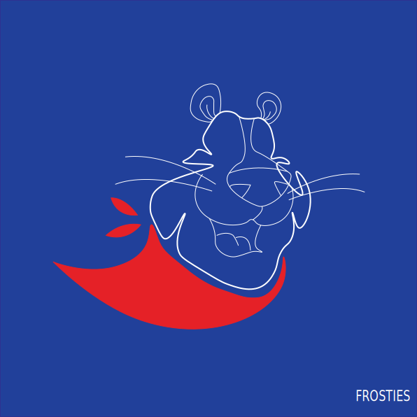

ABOUT ME
MY JÖNKÖPING
MY PORTFOLIO
MY GAME
Go back to my portfolio

Tony the Tiger
This is made for the assignment "Stylization". It is a simplyfied Tony the Tiger from the Kellogs cornflakes company, Frosties. Here it is done as a vector in illustrator.